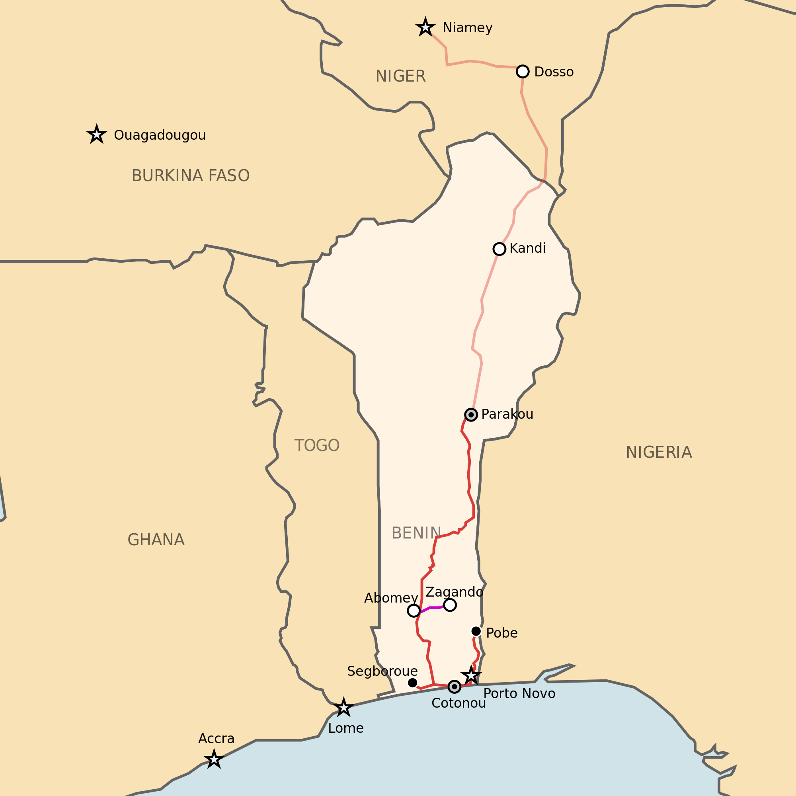

BENIN, officially the Republic of Benin is a country in West Africa. It is bordered by Togo to the west, Nigeria to the east, and Burkina Faso and Niger to the North, and Atlantic Ocean to the South. The capital of Benin is Porto-Novo.
The official language of Benin is French. The population is estimated at 10 millions.The flag of Benin is composed of two horizontal stripes yellow (top) and red marked with a green band of equal width on the side of the spear. The meaning of the colors is explained in the national anthem of Benin, L'Aube Nouvelle: green reminds hope, red the courage of the ancestors and the yellow incites to preserve the power of the country.
BENIN